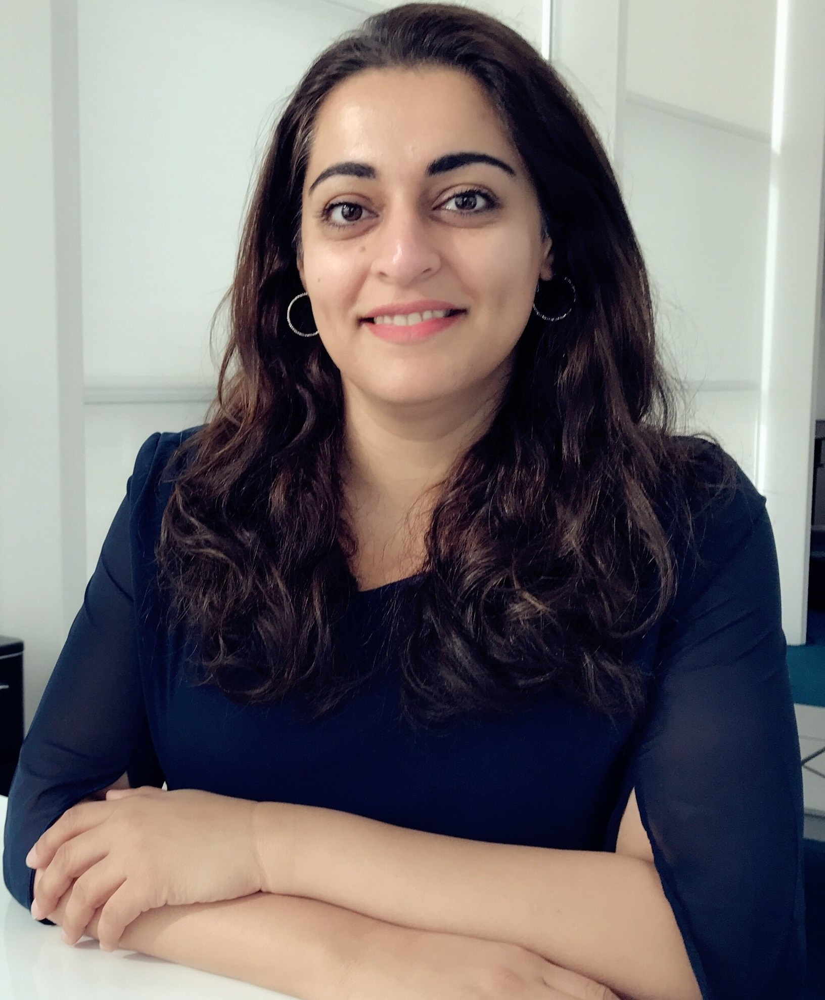

Farah Ali is a seasoned technology executive, keynote speaker, entrepreneur, and non-profit founder with a career spanning the world's most influential technology companies. From a new college graduate at Microsoft to VP of Engineering at Electronic Arts — 20+ years of driving large-scale engineering, AI transformation, and inclusive community building.

Career experience at world-class organizations
Whether you need an inspiring keynote, strategic technology guidance, or experienced board-level leadership, Farah brings deep expertise and authentic conviction to every engagement.
Compelling, research-backed talks that move audiences to action on AI, tech leadership, and building inclusive organizations.
Hands-on partnership to help technology organizations navigate AI transformation, scale engineering teams, and build executive pipelines.
Seasoned executive perspective for boards navigating technology disruption, talent strategy, and the responsible adoption of AI.
Farah's talks combine two decades of hands-on experience with data-driven insights — crafted for executives, engineers, and emerging leaders alike.
How enterprises can responsibly adopt AI without losing the human element — strategies from the trenches of big tech.
Building high-performing teams, navigating ambiguity, and growing from individual contributor to C-suite.
Practical frameworks for organizations and individuals seeking to close the representation gap in STEM.
Lessons from building a VC-backed startup, angel investing, and knowing when to leap from corporate to founder.
The architecture, culture, and leadership required to scale platforms serving hundreds of millions of users.
How to align personal values with organizational goals — and why the most impactful leaders lead with empathy.
Farah shares insights on technology, leadership, and diversity across podcasts, panels, and publications.
Boston Consulting Group · A conversation on building inclusive cultures and leading with difference in big tech.
Host Michael Krigsman · How real-time data powers next-generation gaming experiences at scale.
Farah joins industry leaders to discuss the future of enterprise digital transformation and technology strategy.
Association for Computing Machinery · Empowered by Support: Communities, Connections & Careers
Electronic Arts spotlights Farah's leadership philosophy, values, and vision for technology and people.
A discussion on technology's role in supply chain innovation and the future of logistics tech.
Featured speaker at this exclusive executive technology summit focused on emerging innovation.
Empowering women freelancers and entrepreneurs — insights on navigating tech and building a personal brand.
Farah speaks on accelerating progress for women in technology and leadership.
An unfiltered conversation on technology leadership, innovation, and the future of the industry.
Recognized by industry organizations and publications for leadership, innovation, and advancing diversity in technology.
Recognized at NDLC in Los Angeles for outstanding commitment to inclusive leadership and equity in technology.
Honored as a Groundbreaker by Global Women Asia and Pakistani Women in Computing for contributions to STEM leadership.
EA company-wide award recognizing exceptional collaboration, impact, and shared mission under Farah's leadership.
Named one of the top Women Worth Watching in STEM by Diversity Journal, recognizing excellence across science, technology, engineering, and math.
Farah has contributed to intellectual property across multiple technology domains throughout her career at Microsoft and eBay.
Methods, systems, and apparatus for controlling inventory of items for sale on an online marketplace. The invention projects demand and available inventory to determine a recommended future time period for listing an item — delivered as a user-facing recommendation to maximize seller outcomes.
Contributions to search technology and information retrieval systems during tenure on the Bing Search engineering team at Microsoft, focusing on relevance, scale, and quality of search results delivered to millions of users globally.
View full patent portfolio on LinkedIn →
Farah shares candid perspectives on leadership, AI, resilience, and the human side of technology on Medium.
From empathetic leadership to building AI-ready teams, Farah's writing draws on 20+ years of real-world experience at the intersection of technology and people. Her essays are practical, personal, and grounded in lessons learned across Microsoft, eBay, and Electronic Arts.
A reflection on the fluid, evolving nature of leadership — why assuming a single style for all situations limits a leader's potential, and how staying adaptable is the key to sustained impact.
On hiring people who are curious and open — "who see AI as an accelerant, not a threat to quality or process" — and how leading by example shifts organizational culture toward innovation.
Exploring resilience not as "bouncing back" but as the elasticity of thought — the ability to adapt, improvise, and find new paths forward through challenge and change.
Defining EA's AI strategy and future technology roadmap. Led next-generation player platform initiatives reporting to the CTO. Built engineering teams from under 10 to 100+ engineers. Platform supports 500M global players. Team earned the company-wide Teamwork Award.
Senior engineering leadership driving scale and reliability across eBay's global marketplace platform. Contributed to patent innovations in inventory optimization.
Began career as a new college graduate on the Bing Search team, rising through engineering ranks at one of the world's premier technology companies.
Co-founded VC-backed logistics technology startup optimizing partial truckload freight operations.
Founded global organization connecting Pakistani women in tech and their allies. Focused on visibility, retention, and growth of women in STEM fields worldwide.
Non-profit focused on economic empowerment for communities living below the poverty line. Sponsored the SPRYNG Program's inaugural Youth Career Fair in partnership with the community.
Angel investor and startup advisor focused on early-stage technology companies.
Affiliate Professor teaching Software Entrepreneurship (CSE 490A / ENTRE 432) — a cross-listed course between Computer Science & Engineering and the Foster School of Business. Founding member of WELead — UW Foster's Women's Entrepreneurial Leadership program.
Farah brings executive and technical depth to boards and startups across the Pacific Northwest and beyond — as a director, advisor, investor, and educator.
Portfolio spanning fintech, agtech, cybersecurity, proptech, aviation, and developer tools — plus venture fund positions.
Teaching Software Entrepreneurship (CSE 490A / ENTRE 432), a cross-listed course between the Paul G. Allen School of Computer Science & Engineering and the Michael G. Foster School of Business.
Farah believes deeply in paying it forward — mentoring the next generation of leaders and building communities that create lasting economic and professional opportunity.
Mentoring high school students in business and leadership through this renowned week-long immersive program.
One Good Act sponsored the inaugural SPRYNG Youth Career Fair 2025, providing career exposure and opportunity to underserved youth communities.
Founding member of the Women's Entrepreneurial Leadership program at the University of Washington Michael G. Foster School of Business.
Co-founded global STEM community connecting Pakistani women technologists and their allies worldwide — building visibility, network, and career growth.
Delivered keynote addresses at the Girls Who Code Summer Immersion Program for three consecutive years, inspiring the next generation of women in tech.
Founded non-profit organization focused on economic empowerment and poverty alleviation for under-resourced communities globally.
"I was lucky to report to Farah for four years at EA. She grew our team from a few people to over a hundred and guided disparate groups toward a shared mission. Our organization earned a company-wide award for impact under her leadership."
"Farah leads with a strong vision while supporting her teams on a personal level. She stands out for her charisma, which creates a fun, collaborative environment where people are motivated to do their best work."
"Farah's ability to articulate a technology vision and rally an entire organization behind it is rare. She brings both the technical credibility and the human touch that make people genuinely believe in the mission."
Whether you're planning a conference, building a leadership team, or looking for a board member who truly understands technology — Farah would love to hear from you.
Thank you for reaching out. Farah's team will be in touch within 2 business days.